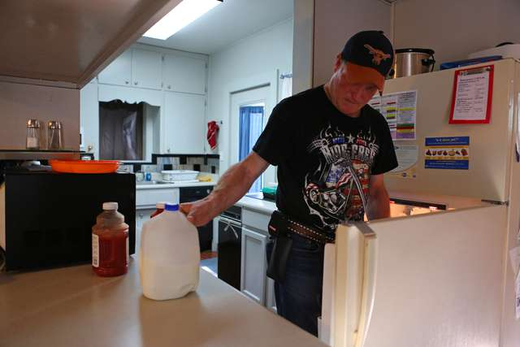
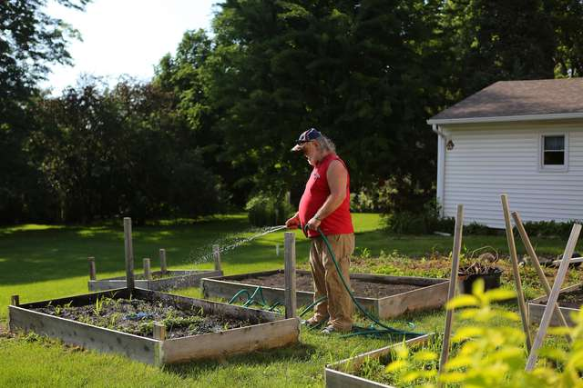

Waterloo, Iowa
With its shops, restaurants and parks, the city of Waterloo was a wonderland of the possible. Some of the men exulted in their unshackling, while others did not yet trust what was happening.
"A lot of them wanted to be assured that their former caretakers wouldn't be coming to get them," recalls Susan Seehase, the services director for Exceptional Persons.
The nonprofit set up meetings with Medicaid case managers, made medical and dental appointments, and arranged for mental health evaluations. Some employees spent their own money on clothes for the Atalissa refugees.
Many of the men focused on what they had left behind: televisions, winter coats, those blankets that an Atalissa woman had spent a year quilting for each of them. So Ms. Seehase and a few colleagues drove down to collect what could be salvaged, only to find clothes and quilts worn and soiled, and appliances riddled with roaches.
The people of Atalissa could not believe that the boys had been spirited away overnight. "Like someone swooping in and taking your children for reasons you don't know," says Lynn Thiede, the former pastor at the Zion Lutheran Church.

They were especially upset that their requests to contact their longtime neighbors were being denied. But many of the men were suffering from post-traumatic stress, Ms. Seehase says. "We were trying to give them a break from that life."
The Iowa news media flocked to Atalissa to ask how such abuse could have happened there. Defensive residents recalled the parades and dances, and explained that they had not been inside the schoolhouse for many years. Still, the criticism tugged at the collective conscience.
"I'm sure some of us - a lot of us, maybe - had second thoughts," Mr. Hepker says. "That we should have looked into it a little deeper."
The Atalissa soul-searching held no interest for Ms. Seehase. Now that this case had pierced her social worker's protective armor, she was on a mission.
Several of the schoolhouse evacuees had moved South to be with relatives, leaving a dozen others in need of permanent housing. They also needed basic life lessons in how to interact with women, say, or how to make nutritious food choices. Ms. Seehase notes that they were adamant on one point: no turkey.
A ranch house on a busy avenue. A split-level house on a quiet street. A house with red brick on a cul-de-sac. A few people new to Waterloo found homes and settled into the 21st century.